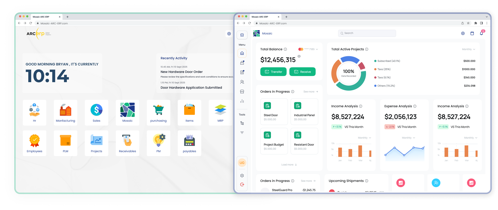

Enterprise ERP · Systems Thinking · Complex Workflows
Mosaic — ARC ERP
Designing a scalable ERP for architectural hardware distribution.
- Role
- Product Designer
- Product Type
- Enterprise ERP
- Platform
- Web
- Industry
- Construction · Architectural Hardware · B2B SaaS
- Timeline
- 9 months
- Scope
- Discovery · Research · IA · UX · Ready production Design System & UI · Prototype · Validation · Handoff

01 · Overview
What is Mosaic?
Mosaic is a specialized model within ARC ERP designed for companies operating in the door, frame, and architectural hardware distribution industry.
Unlike a generic ERP, Mosaic is structured around the way architectural opening projects are actually planned, specified, ordered, coordinated, and delivered. It brings project information, openings, doors and frames, hardware sets, orders, suppliers, documents, and operational data into one connected environment.
One System for Complex Project Operations
Architectural hardware projects contain highly interconnected information.
A single project can include hundreds of openings, with each opening carrying its own door, frame, wall, fire-rating, hardware, and specification requirements. Those requirements eventually influence quotations, purchasing, orders, shipments, receiving, project costs, and documentation.
Mosaic creates a structured relationship between these operational objects rather than treating them as isolated records.
02 · Challenge
Turning Complexity Into a Scalable System
Mosaic was not simply a dashboard redesign. The product needed to support detailed configurations, interconnected data, multiple roles, permissions, dense information, long operational workflows, and future expansion without making everyday tasks harder to understand.
How might we transform a collection of disconnected ERP screens into a scalable operational system capable of supporting complex projects, products, workflows, roles, permissions, and future modules without overwhelming users?
Complexity
Architectural hardware data includes detailed door, frame, hardware, specification, and compliance relationships.
Cross-functional workflows
Sales, projects, procurement, inventory, finance, and customer service depend on shared information.
Scalability
The architecture needed room for more organizations, users, modules, data, roles, and researched integration needs.
Usability
Operational depth had to remain clear enough for frequent work, review, and decision-making.
03 · Existing Product Audit
Existing ERP Review
The existing design was reviewed against the needs of a scalable ERP. The audit examined structure, reuse, responsiveness, workflow continuity, and support for enterprise operations—not only visual consistency.
No structured design system
Reusable components, shared states, tokens, and scalable component rules were limited.
Inadequate grid foundation
Alignment and adaptation across desktop, tablet, and smaller screens lacked a consistent framework.
Dashboard thinking
The early structure did not sufficiently account for tables, forms, approvals, documents, reporting, and cross-module relationships.
No clear user flows
Entry points, task progression, completion states, and relationships between modules required definition.
Responsive risk
Dense tables, forms, and multi-column operations were not prepared for progressive adaptation.
Missing shared guidelines
Future modules did not have documented rules for maintaining consistency.
No separate original “before” screens were found in the repository, so the audit is documented without fabricating a visual comparison.
04 · Discovery & Research
Exploring the Problem Space
Discovery was grouped into five lenses to connect business priorities, role behavior, product scope, technical constraints, and experience quality. This prevented a long question list from becoming detached from design decisions.
Business
Business problems, critical workflows, success criteria, and future product direction.
Users
Primary roles, workflow behavior, existing ERP pain points, module switching, and customization needs.
Product
Must-have functions, researched automation opportunities, configuration, and dashboard requirements.
Technology
Integration, collaboration, cloud access, security, compliance, and offline considerations.
Experience
Visual direction, information density, accessibility, responsive behavior, and industry conventions.
05 · Business & Domain Research
Why Generic ERP Falls Short
Architectural hardware projects connect openings, doors, frames, wall types, fire ratings, hardware sets, products, manufacturers, suppliers, specifications, approvals, orders, and shipments. Changes to one object can affect several downstream teams and records.
Industry complexity
Configurations, manufacturers, product dependencies, compliance requirements, fire ratings, and specifications must remain connected.
Project complexity
Projects can contain many openings, schedules, stakeholders, suppliers, changes, approvals, and related orders.
Operational friction
The supplied research material identified spreadsheets, manual processes, duplicate data, quoting, procurement, inventory, and shipment tracking as problem areas.
Financial needs
Project costs, billing, invoicing, profitability visibility, and financial reporting need project context.
Customer and stakeholder needs
Order visibility, communication, delivery tracking, and issue resolution depend on reliable shared status.
Market research was used as a secondary signal. No precise market-size statistic is presented because its source was not available in the supplied files.
06 · Competitive Analysis
Deep functionality existed clarity was the opportunity
Research reviewed Comsense Enterprise, PRO-TECH TITAN, AVAware Technologies, and Insite4Doors. The comparison focused on the supplied research themes rather than asserting unsupported feature parity.
| Product | Research focus | Supported signal | Opportunity considered |
|---|---|---|---|
| Comsense Enterprise | Estimating, detailing, projects, catalogs, accounting | Established industry specialization | Interface clarity and learning experience |
| PRO-TECH TITAN | Projects, workflows, changes, quote requests | Cloud-based project focus | Learnability and workflow coherence |
| AVAware Technologies | Bidding, detailing, submissions, elevations, scheduling | Deep traditional workflows | Modernization and cloud access |
| Insite4Doors | Inventory, service, mobile, customers, projects | Broad door-industry operations | Connected navigation and scale |
| Mosaic | Connected architectural-hardware operations | Responsive modular product direction | Clarity, context, permissions, and systems |
The market already contained deep functionality. Mosaic’s opportunity was not simply to add more features, but to make complex industry workflows clearer, more connected, easier to navigate, and easier to scale.
07 · Users & Needs
Different Roles, Different Needs
Role-based archetypes kept the work grounded in responsibilities instead of fictional names, ages, or biographies.
Sales Representative
Manages quotations, customer relationships, order creation, and follow-up. Needs pricing, stock context, quote speed, order status, and customer history; manual entry and limited visibility create friction.
Project Manager
Coordinates timelines, budgets, resources, suppliers, and changes. Needs milestones, approvals, procurement context, and material visibility; fragmented information slows coordination.
Customer Service
Needs customer and order history, issue tracking, communication context, and current delivery status.
Inventory / Procurement
Needs stock visibility, supplier context, purchasing, receiving, and material planning.
Finance
Needs project-linked invoices, costs, billing information, and reporting.
Organization Administrator
Needs users, roles, permissions, configuration, and researched integration settings.
User-needs synthesis
08 · Business Process Mapping
Understanding End-to-End Workflows
Strategic areas—projects, sales, inventory, supply chain, customer relationships, and finance—were connected to tactical processes such as quotation, procurement, order management, project coordination, and support. Operational flows then exposed dependencies and handoffs.
Quotation
- Client Request
- Verify Customer
- Analyze Requirements
- Assess Project Scope
- Select Products
- Calculate Cost
- Calculate Margin
- Prepare Quote
- Review
- Approval
- Send
- Follow Up
Procurement
- Material Requirement
- Supplier Selection
- Purchase Order
- Supplier Processing
- Shipment
- Receiving
- Inspection
- Inventory / Project Update
09 · Problem Definition
Clarity Before Complexity
Mosaic needed to unify highly interconnected operational workflows without reproducing the complexity associated with traditional ERP systems.
Sales, projects, inventory, procurement, finance, customer service, and administration depend on shared information. Yet each role needs a different level of visibility and control. The design challenge became: expose complexity when necessary while keeping everyday work clear, predictable, and efficient.
Context Before Complexity
Show the information and actions relevant to the current task.
One Operational Source of Truth
Keep shared business objects consistent across workflows.
Design Around Workflows
Organize the experience around work, not the internal module map.
Roles Shape the Experience
Match visibility and actions to responsibility.
Scale Through Systems
Use reusable patterns that can extend to future modules.
Make Status Visible
Clarify what happened, what is pending, and who owns the next step.
10 · IAM & Permissions
Designing Access & Control
The architecture had to answer not only what information exists, but who can see, create, edit, approve, remove, or administer it.
RBAC baseline
Role-Based Access Control groups predictable permissions by responsibility instead of configuring every user independently.
ABAC where context matters
Organization, department, location, resource, or other attributes can shape contextual access where a role alone is insufficient.
Least privilege
Users should receive only the access required for their responsibilities.
DAC limitation
Highly discretionary individual sharing was considered a weaker primary model because it can make governance and review harder.
Proposed role hierarchy
- Super AdminPlatform-level administration
- System AdminSystem and organization administration
- Organization AdminOrganization users and settings
- Default RolesPredefined operational permissions
- Custom RolesConfigured permission combinations
This is a proposed access model explored during design, not a claim of complete implementation.
11 · Information Architecture
Organizing the Product Architecture
Mosaic sits within a wider ARC ERP context that includes Sales, Purchasing, Manufacturing, Items, MRP, Employees, Quality, PLM, Projects, Receivables, Payables, PM, and Admin. Its own architecture needed to stay connected to that ecosystem while keeping domain-specific work coherent.
Proposed sitemap
Overview
The operational starting point for priorities, recent work, alerts, and frequent actions.
Projects
The central workspace for finding projects, reviewing status, and managing lifecycle activity.
Openings
A structured area for creating and maintaining opening, door, frame, rating, and specification data.
Hardware & Libraries
Reusable product knowledge that keeps hardware selection and specification work consistent.
Orders
The commercial workflow connecting order status, items, pricing, suppliers, delivery, and receiving.
Reports & Documents
Project reporting and controlled documentation for progress, cost, delivery, review, and export.
Notifications
A focused view of events and pending work that require awareness or action.
Administration
Organization-level control for people, access, configuration, traceability, and extensibility.
Where do I need to work?
Overview · Projects · Libraries · Openings · Hardware · Orders · Reports & Analytics · Document Center · Notifications · Admin & Settings
What do I need to do inside this project?
Summary · Project Details · Phases & Timeline · Openings · Hardware Sets · Orders · Receiving · Shipments · Documents · Reports · Project Settings
The sitemap combines designed structure with proposed and researched areas; it does not assert that every listed capability was implemented.
12 · Domain Model
How do Business Objects Connect?
The interface architecture needed to preserve relationships between business objects rather than treating each ERP module as an isolated destination.
- Organization
- Project
- Opening
- Door / Frame / Wall Type
- Hardware Set
- Hardware Items
- Quote
- Order
- Shipment / Receiving
13 · User Flows
Translating Structure Into Actions
The case-study material documents six representative workflow models. They show intended structure and dependencies; no claim is made that every flow reached implementation.
Create Project
Projects → New Project → Information → Configuration → Team → Save → Project Workspace
Opening Creation / Import
Project → Openings → Create / Import → Door → Frame → Wall → Specifications → Save
Hardware Assignment
Opening → Hardware → Select Set → Modify Items → Validate → Assign
Quote to Order
Project → Select Items → Quantity → Pricing → Quote → Approval → Order
Order to Receiving
Order → Supplier → Submit → Shipment → Receiving → Project / Inventory Update
Permission Management
Admin → User → Role → Permissions → Scope → Save
14 · UX Structure
Patterns That Scale
The architecture translated into a predictable set of navigation, information, operation, action, and feedback patterns.
Navigation
Global navigation, project navigation, breadcrumbs, and persistent project context.
Information
Overviews, lists, entity details, and tabs create progressive depth.
Data operations
Tables, search, filters, sorting, pagination, bulk actions, and export were structured where appropriate.
Actions
Drawers, modals, forms, and multi-step workflows support different levels of task complexity.
System feedback
Statuses, alerts, validation, loading, empty, and error states make progress and exceptions visible.
Overview → List → Entity → Details → Action
15 · Design System
Building for Consistency
The audit exposed limited reuse and inconsistent foundations. The design response organized a reusable enterprise system so modules could share behavior instead of recreating it screen by screen.
Component architecture
States and responsive foundation
Default, hover, focus, selected, disabled, error, success, and loading states formed the intended coverage. Responsive behavior prioritized progressive adaptation: desktop supports dense operational work, while tablet and mobile emphasize lookup, status, approvals, and lightweight updates rather than compressing every workflow.
The originating Figma component library, typography specification, token file, and grid documentation were not available. Component coverage and states are presented as the documented design-system model, not as proof of full implementation.
16 · Key Workflows & UI
From Product Thinking to UI
17 · Prototype & Testing
Validating Design Decisions
I moved beyond static Figma prototypes by building a production-ready front-end prototype to validate Mosaic’s workflows and Design System components in a real interactive environment.
This helped validate navigation, task sequences, states, permissions, responsive behavior, and component interactions before development handoff.
Explore a Live Example
This interactive prototype demonstrates both the Side Navigation behavior—expanded, collapsed, and pinned states—and the complete Create New Role permission flow.
This is one representative example of the broader prototyping approach used across Mosaic to validate reusable, implementation-ready interactions rather than isolated screens.
18 · Developer Handoff
A System Ready to Build
The documented handoff model connected the design system, responsive rules, workflow structure, and access logic so engineering could reason about behavior across modules.
Reusable system
Components, variants, design tokens, interaction states, and responsive rules.
Operational states
Loading, empty, error, success, validation, and status behavior.
Product logic
User flows, domain relationships, permission rules, and global versus project context.
Documentation
Specifications and shared naming intended to reduce ambiguity between design and development.
The handoff went beyond Figma specifications. I translated the Mosaic Design System into Storybook, giving developers an implementation-ready reference for reusable components, variants, states, interaction patterns, and usage guidelines—creating a clearer bridge between design and development and supporting consistency across the product. View Storybook ↗
19 · Outcome
A System Built to Scale
No verified performance metrics were supplied. The supported outcomes are structural product-design deliverables and directions.
The work also improved responsive readiness and clarified the intended design-to-development handoff. These statements describe the documented product foundation; they do not claim launch or business performance.
20 · Key Takeaways
Turning Complexity Into Clarity
Enterprise design is not about removing complexity. It is about structuring complexity so users can understand, navigate, and control it.
Mosaic required business analysis, domain and competitive research, user understanding, process mapping, systems thinking, IAM, information architecture, domain modeling, workflow design, data-dense UX, design systems, responsive design, and technical collaboration.
The biggest shift was moving from designing ERP screens to designing an interconnected operational system.
01 · Overview
Mosaic at a glance
Mosaic is a specialized model within ARC ERP for door, frame, and architectural hardware distributors.
It brings complex project operations into one connected workspace—linking projects, openings, doors and frames, hardware, quotes, orders, suppliers, shipments, and documents. The platform supports multiple operational roles—including Sales, Project Management, Procurement, Customer Service, Finance, and Administration—while keeping project information and workflows connected throughout the lifecycle.
02 · Challenge & Starting Point
Turning Complexity Into a Scalable System
No scalable design system
Limited component reuse and shared states.
Weak responsive foundation
Inconsistent grid and unresolved dense-screen adaptation.
Unclear flows
Entry, progression, completion, and module relationships needed definition.
Dashboard-oriented structure
Operational tables, forms, approvals, documents, and cross-module work were underrepresented.
Limited access model
Roles, permissions, and contextual visibility needed an explicit architecture.
How might we turn disconnected ERP screens into a scalable operational system without overwhelming users?
03 · What I Learned
Five signals shaped the product direction
Openings, doors, frames, hardware, specifications, suppliers, orders, and compliance data form a connected domain.
Sales, project, service, procurement, finance, and admin roles require different information and control.
Spreadsheet dependence, duplicate data, and disconnected workflows create operational friction.
Existing products offer deep functionality; clarity, learnability, connection, and scale remain opportunities.
Quotation and procurement span departments, objects, decisions, and handoffs rather than isolated modules.
16 · Key Workflows & UI
From Product Thinking to UI
07 · Validation & Delivery
A System Built to Scale
Prototype & workflow validation
The documented scope covered context, sequence, state, responsibility, and next actions across representative flows. No participants, findings, metrics, or iteration artifacts were supplied.
Developer handoff
The intended package connected components, variants, tokens, interaction states, responsive rules, UX flows, permissions logic, and documentation. Source handoff files were not supplied for verification.
08 · Outcome & Takeaways
Turning Complexity Into Clarity
No performance metrics or business outcomes are claimed. The supported outcome is a clearer product architecture and design foundation.
The biggest shift was moving from designing ERP screens to designing an interconnected operational system.